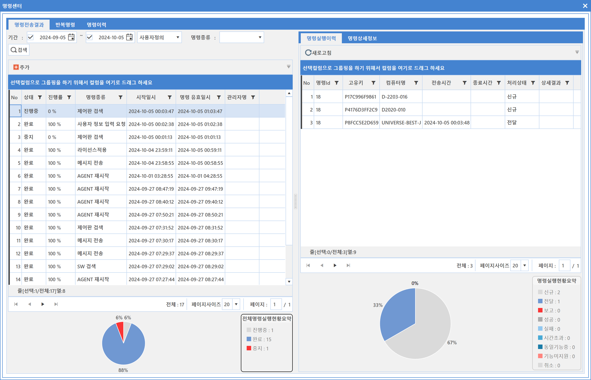
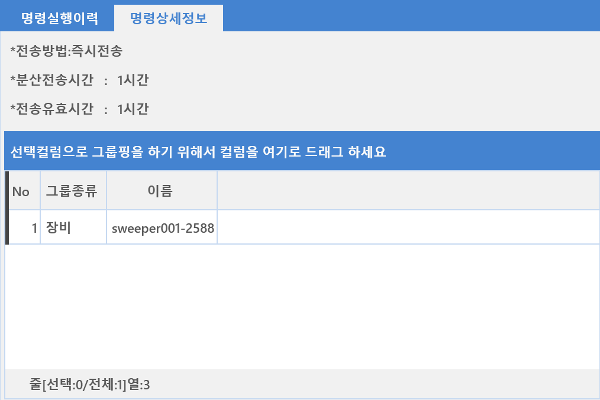
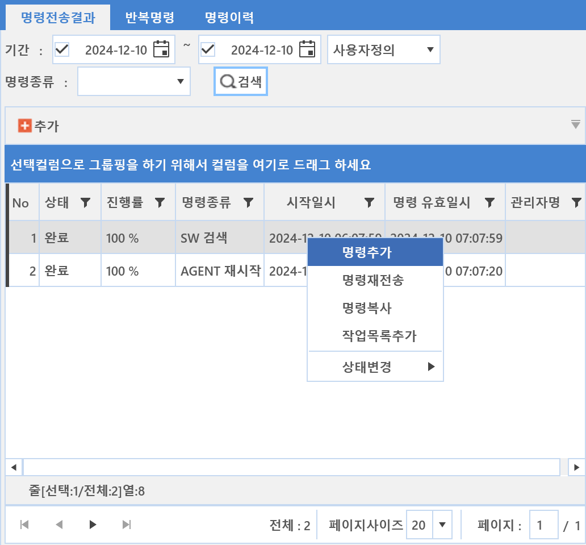
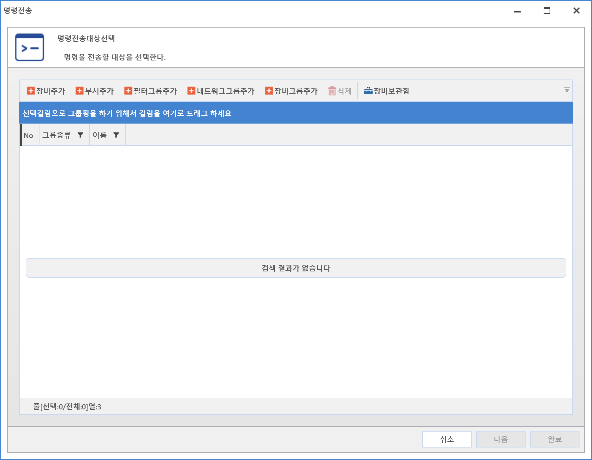

3-1-1-1. 명령전송 결과
3-1-1-1. 명령전송 결과
Source: https://www.sweeper.or.kr/etc/manual/3111.html
3-1-1-1. 명령전송 결과
3. 공통 ›› 3-1. 도구 ›› 3-1-1. 명령센터 ››


에이전트에 전송된 명령의 현황을 검색할 수 있으며, 상태 및 진행률, 그래프로 구성된 결과를 확인할 수 있습니다.

참고사항
반복명령을 설정하는 경우, 관리자명이 표시되지 않습니다. (설정된 시간에 자동으로 명령을 수행하기 때문에 )
명령 실행 이력
명령이 실행된 장비들의 상세 정보를 확인할 수 있습니다.
- 처리상태 : 명령의 처리 상태를 알려줌
- 상세결과 : 상태에 대한 상세내역이 있는 경우 보여줌

참고사항
원격제어의 경우 시작시간 항목이 따로 존재하며, 이는 원격제어 시작시간을 의미합니다.
원격제어의 명령실행이력에서 종료시간은 원경제어명령전송 종료시간이 아닌, 원격제어 종료시간을 의미합니다.

명령 상세 정보
전송된 명령의 설정 상세 정보를 확인할 수 있습니다.

명령 기능 사용
특정 장비를 선택하여 마우스 우클릭 할 경우 표시되는 기능을 설명합니다.

-
명령추가 : 새로운 명령을 신규로 생성하여 전송하는 기능입니다.
-
추가 버튼 또는 마우스 우클릭하여 명령 추가 메뉴를 선택합니다.
- 아래 그림과 같은 명령 생성 Wizard가 팝업됩니다.

- 추가 버튼 또는 장비보관함을 클릭하여 명령 대상을 추가한 뒤 다음 버튼을 클릭합니다.

- 전달할 명령을 선택한 뒤 필요한 명령설정을 하고 다음 버튼을 클릭합니다.

-
명령 전송 시간설정을 합니다.
-
시간설정은 예약전송, 반복전송만 가능합니다. (분 단위)
- 반복전송은 반복명령 화면에서 추가해야만 설정 가능합니다.
- 분산전송 : 명령 과부하를 방지하기 위한 설정으로 시간에 분단위로 장비수를 나누어 전송하기 위한 설정입니다.
- 분산 유효 시간 : 분산 전송 시간을 유지하는 시간 설정 입니다.

-
설정이 완료되면 완료버튼을 클릭하여 명령 추가를 완료합니다.
-
명령재전송 : 이미 전송한 명령을 다시 재전송하는 기능입니다.
-
원격제어같은 실시간 명령은 재전송할 수 없습니다.
-
명령복사 : 이미 전송한 명령을 복사하여 명령을 전송할 수 있는 기능이며, 내용 편집이 가능합니다.
-
원격제어같은 실시간 명령은 재전송할 수 없습니다.
-
상태변경 : 전송한 명령 중 긴급히 전송 중지할 경우 사용되며 다시 진행 중으로 변경 가능합니다.
© Copyright SWeeper Inc.. All Rights Reserved